전체 흐름 한눈에 보기
Transformer는 입력 문장을 한 번에 읽고, Decoder가 번역 문장을 한 token씩 만들어내는 구조입니다.
Encoding
× 6
× 6
Softmax
sur le tapis.
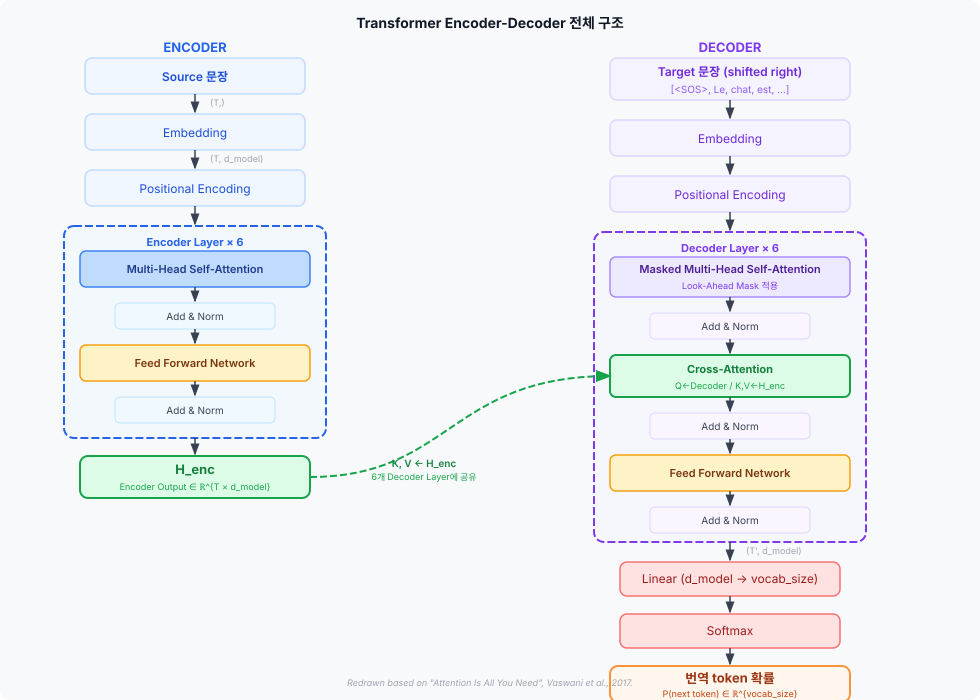
Transformer는 왜 나왔는가?
Transformer(Vaswani et al., 2017)는 기존 RNN 기반 번역 모델의 한계를 극복하기 위해 제안되었습니다.
기존 RNN의 한계
- 문장을 왼쪽부터 한 단어씩 순서대로 처리 → 병렬화 불가
- 멀리 떨어진 단어 간 관계가 흐려짐 (장거리 의존성 문제)
- 문장이 길수록 앞쪽 정보가 점점 희석됨
Transformer의 해결책
- Attention으로 모든 token 간 관계를 직접 계산
- 전체 문장을 한 번에 처리 → GPU 병렬 연산 가능
- 멀리 떨어진 단어도 Attention 한 번으로 직접 연결
Tokenizer — 문장을 숫자 ID로
컴퓨터는 문자를 직접 처리할 수 없습니다. Tokenizer는 문장을 token으로 나누고, 각 token을 vocabulary에서 정수 ID로 변환합니다.
→ ["The", "cat", "is", "on", "the", "mat"]
→ [1, 5, 2, 6, 1, 10 ]
<PAD>(id=0)를 붙여 길이를 맞춥니다. Padding Mask가 이 위치를 Attention에서 무시하도록 처리합니다.
Embedding — token ID를 벡터로
token id는 단순한 숫자 label이므로 모델이 의미를 이해할 수 없습니다. Embedding Layer는 각 token id를 d_model 차원의 실수 벡터로 변환합니다.
E_i = W_emb[token_id_i]
Embedding vector는 학습 과정에서 의미적으로 유사한 단어가 비슷한 방향을 갖도록 업데이트됩니다. "cat"과 "dog"의 벡터는 가깝고, "cat"과 "Paris"의 벡터는 다른 방향에 위치하게 됩니다.
Positional Encoding — 순서 정보 주입
Transformer는 RNN처럼 순서대로 처리하지 않고 전체 sequence를 한 번에 처리합니다. 따라서 모델 스스로는 token의 위치 순서를 알 수 없습니다. Positional Encoding(PE)을 embedding에 더해 위치 정보를 전달합니다.
하지만 PE(pos=0) ≠ PE(pos=4) 이므로
→ E₁ + PE(pos=0) ≠ E₁ + PE(pos=4)
→ 모델에는 다른 입력으로 들어간다.
Advanced: sin/cos Positional Encoding 수식
PE(pos, 2i+1) = cos(pos / 10000^{2i/d_model})
학습 파라미터 없이 수식으로 결정. 긴 문장에도 외삽(extrapolation) 가능.
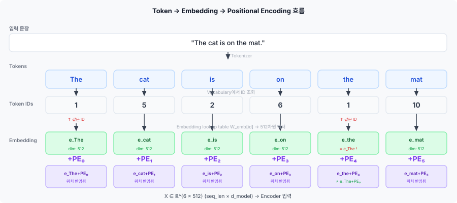
Encoder-Decoder 전체 구조
논문 기준으로 Encoder는 6개의 Encoder Layer로 구성되고, Decoder도 6개의 Decoder Layer로 구성됩니다.
Encoder
입력: "The cat is on the mat." (source)
역할: source 문장을 읽고 내부 표현 H_enc 생성
H_enc shape: (src_len, d_model) = (6, 512)
Decoder
입력: H_enc + 이전 target token
역할: H_enc를 참고하며 번역 문장 생성
출력: 다음 token의 확률 분포
Encoder Layer 구조
각 Encoder Layer는 두 개의 sub-layer로 구성됩니다. 각 sub-layer 뒤에는 Residual Connection + Layer Normalization이 적용됩니다.
- Multi-Head Self-Attention: source 문장의 각 token이 다른 모든 token을 참고한다. "cat"은 "mat", "is", "The" 등과 관계를 계산한다.
- Add & Norm: Residual Connection + Layer Normalization.
LayerNorm(x + SubLayer(x)) - Feed Forward Network: 각 token을 독립적으로 비선형 변환한다.
- Add & Norm: 다시 Residual + LayerNorm.
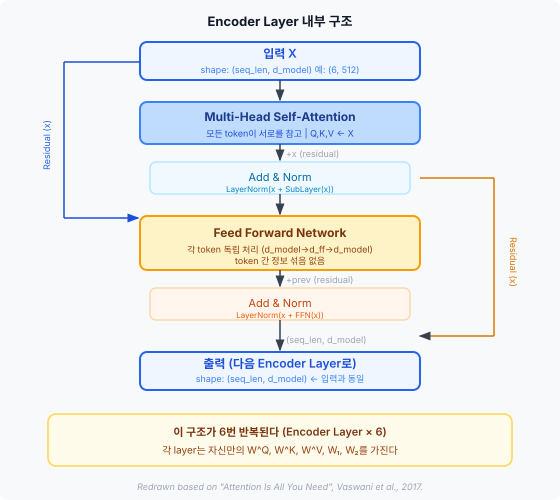
Q, K, V 생성 — 같은 X에서 세 가지 투영
Self-Attention의 시작은 입력 X에서 Query(Q), Key(K), Value(V)를 만드는 것입니다. 각각 다른 학습 가능한 weight matrix를 곱해 선형 투영합니다.
K = X W^K, shape: (seq_len, d_k)
V = X W^V, shape: (seq_len, d_v)
논문 기본값: d_model=512, d_k=d_v=64 (head당)
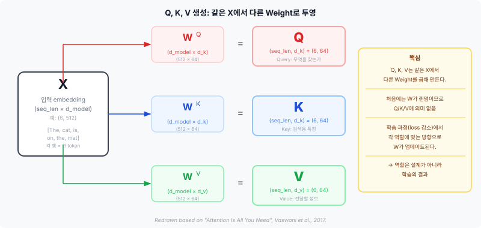
Attention Score Matrix — 토큰 간 관련도
Q와 K의 내적(dot product)으로 Attention Score Matrix를 계산합니다. 이 행렬은 "i번째 token이 j번째 token을 얼마나 참고해야 하는가"를 나타냅니다.
score_ij = q_i · k_j
row i = "i번째 Query가 모든 Key에 대해 계산한 점수"
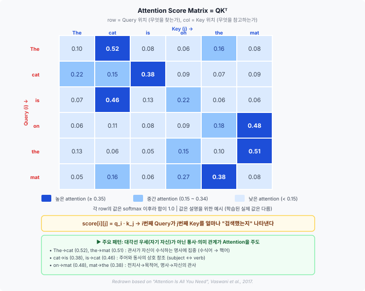
score_ij가 크다 = "i번째 token이 j번째 token에 주목한다"
Scaled Dot-Product Attention
- Q와 K 내적: Score = QKᵀ → 각 token 쌍의 관련도 점수
- √d_k로 나누기: Score 값의 분산을 안정화
- Softmax: 각 row를 확률 분포로 변환 (합 = 1.0)
- V와 곱하기: 확률 비율에 따라 Value 정보를 가중합
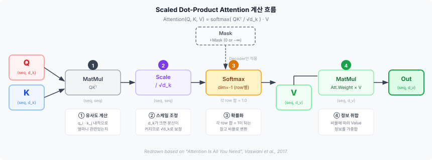
주의: sequence 길이가 길어서 나누는 것이 아닙니다. 원인은 d_k 차원 크기입니다.
Multi-Head Attention — 여러 관점으로 보기
하나의 Attention만으로는 한 가지 관점의 관계만 포착합니다. Multi-Head Attention은 d_model 차원을 h개의 head로 나누어 각 head가 서로 다른 관계 패턴을 학습하게 합니다.
d_k = d_v = d_model / h = 512 / 8 = 64
head_i = Attention(Q_i, K_i, V_i)
MultiHead(Q,K,V) = Concat(head_1,...,head_8) W^O
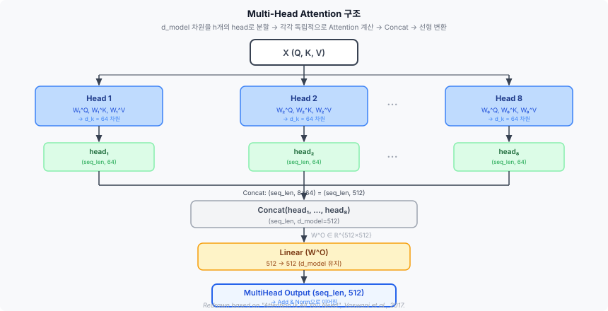
Residual Connection과 Layer Normalization
각 sub-layer(MHA, FFN) 뒤에는 반드시 Residual Connection + Layer Normalization이 적용됩니다.
Residual Connection
원래 입력 x를 sub-layer 출력에 더해주는 '지름길'입니다.
- 깊은 네트워크에서 gradient 소실 방지
- x와 SubLayer(x) shape이 같아야 더할 수 있음 → Transformer 전체에서 d_model=512가 유지되는 이유
Layer Normalization
각 token의 d_model 차원에 걸쳐 정규화합니다. 학습 안정화 효과.
- 평균=0, 분산=1로 정규화
- batch 크기와 무관하게 동작 (Batch Norm과 다른 점)
Feed Forward Network — 토큰별 독립 변환
Attention이 "어떤 token들을 참고할지" 결정했다면, FFN은 "각 token의 표현을 어떻게 변환할지" 결정합니다. token 간 정보 교환 없이 각 위치를 독립적으로 처리합니다.
512 → 2048 (ReLU) → 512 (d_ff = 2048 = 4×d_model)
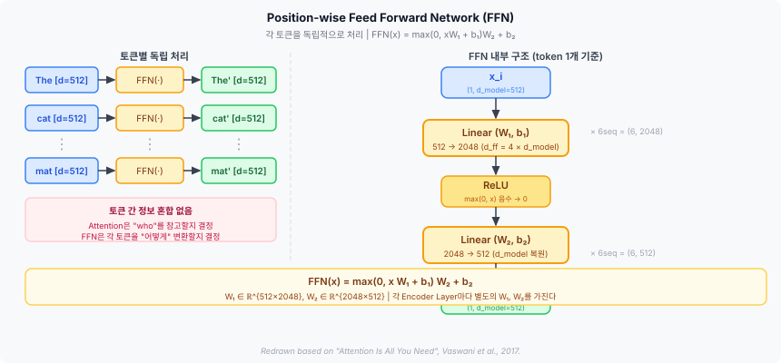
Attention: token 간 정보를 섞는다 — "어디서 정보를 가져오는가?"
FFN: 섞인 정보를 각 token 위치에서 독립적으로 가공한다 — "가져온 정보를 어떻게 변환하는가?"
LayerNorm(x + FFN(x))에서 x와 FFN(x)를 더하려면 shape이 같아야 합니다.
내부에서는 2048로 확장하더라도 최종 출력은 반드시 512로 축소합니다.
Decoder 구조 — 번역 문장 생성
Decoder Layer는 세 개의 sub-layer로 구성됩니다. Encoder Layer보다 Cross-Attention이 하나 더 있습니다.
- Masked Multi-Head Self-Attention: target 문장 내부 token들이 서로 참고하되, 미래 token은 볼 수 없도록 Mask를 적용한다.
- Add & Norm
- Cross-Attention: Decoder의 현재 상태(Q)가 Encoder 출력 H_enc(K, V)를 참고한다. source 문장의 어디를 볼지 결정하는 단계.
- Add & Norm
- Feed Forward Network: 각 token을 독립 변환.
- Add & Norm
학습 시 Decoder 입력: Shifted Target
학습 시에는 정답 target 문장을 알고 있습니다. 정답 문장을 오른쪽으로 한 칸 shift하고 앞에 <SOS>를 붙여 Decoder 입력으로 사용합니다. 이를 Teacher Forcing이라 합니다.
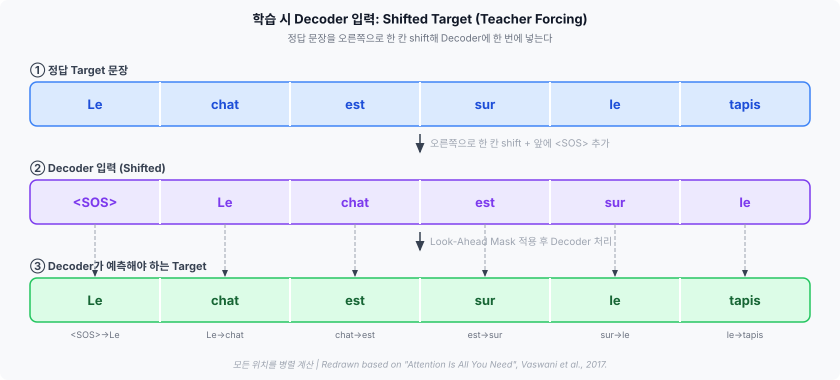
입력: [<SOS>, Le, chat, est, sur, le ]
예측 목표: [Le, chat, est, sur, le, tapis]
Look-Ahead Mask — 미래 차단
Decoder는 번역 문장을 생성할 때 아직 생성하지 않은 미래 token을 미리 볼 수 없습니다. Look-Ahead Mask는 이를 강제합니다.
- Q = X_dec W^Q
- K = X_dec W^K
- V = X_dec W^V
- Score = Q · Kᵀ
- MaskedScore = Score + Mask ← 이 단계에서 Mask 적용
- AttentionWeight = softmax(MaskedScore / √d_k)
- Output = AttentionWeight × V
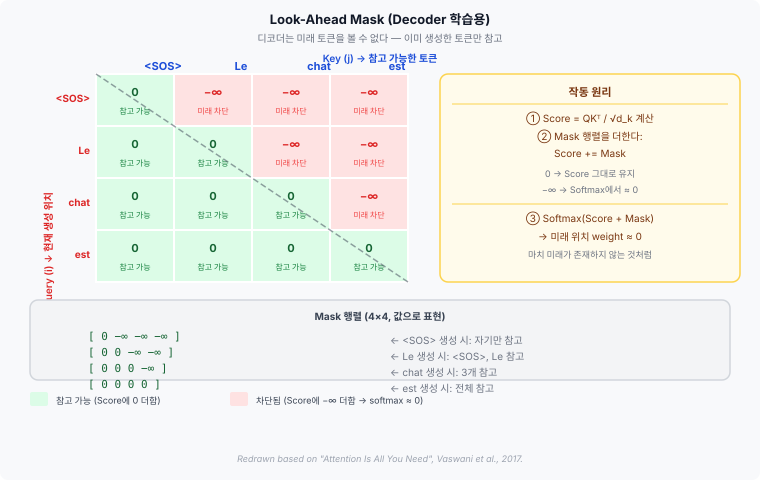
대화형 Mask 행렬 — 셀에 마우스를 올려보세요:
Decoder 입력: [<SOS>, Le, chat, est]
| K: <SOS> | K: Le | K: chat | K: est | |
|---|---|---|---|---|
| Q: <SOS> | 0 허용 <SOS> 위치는 자기 자신만 참고 가능.
Le, chat, est → 미래 token → −∞로 차단 |
−∞ 차단 <SOS> 생성 시점에 Le는 아직 없다.
Score에 −∞ 더함 → Softmax 후 weight ≈ 0 |
−∞ 차단 <SOS> 생성 시점에 chat은 아직 없다.
미래 token → 차단 |
−∞ 차단 <SOS> 생성 시점에 est는 아직 없다.
미래 token → 차단 |
| Q: Le | 0 허용 Le 생성 시 <SOS>는 이미 있다.
과거/현재 token → 허용 (j ≤ i) |
0 허용 Le는 자기 자신을 참고할 수 있다.
현재 위치 → 허용 (j = i) |
−∞ 차단 Le 생성 시 chat은 아직 없다.
미래 token → 차단 (j > i) |
−∞ 차단 Le 생성 시 est는 아직 없다.
미래 token → 차단 |
| Q: chat | 0 허용 chat 생성 시 <SOS> 참고 가능.
|
0 허용 chat 생성 시 Le 참고 가능.
|
0 허용 chat은 자기 자신을 참고할 수 있다.
|
−∞ 차단 chat 생성 시 est는 아직 없다.
미래 token → 차단 |
| Q: est | 0 허용 est 생성 시 <SOS> 참고 가능.
|
0 허용 est 생성 시 Le 참고 가능.
|
0 허용 est 생성 시 chat 참고 가능.
|
0 허용 est는 자기 자신을 참고할 수 있다.
마지막 위치라 전체 참고 가능. |
Cross-Attention — Encoder와 Decoder의 연결
Decoder의 두 번째 sub-layer는 Cross-Attention입니다. Q는 Decoder에서, K와 V는 Encoder 출력 H_enc에서 옵니다.
K_cross = H_enc W^K ← Encoder output
V_cross = H_enc W^V ← Encoder output
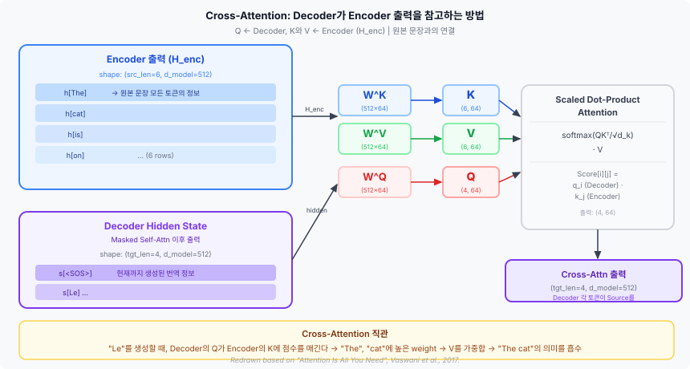
→ "cat" 위치의 Attention Weight가 커짐 → "cat" Value 정보가 Decoder에 더 많이 반영됨 → "chat" 예측에 도움
Padding Mask — <PAD> 위치 무시
배치(batch) 단위로 여러 문장을 처리할 때 길이를 맞추기 위해 짧은 문장 뒤에 <PAD>를 붙입니다. Padding Mask는 <PAD> 위치에 Attention이 분배되지 않도록 합니다.
배치 내 문장 2: [A, dog, runs, fast, here, in, the, park]
Mask: <PAD> 위치의 Score를 −∞로 설정
Padding Mask 적용 위치
- Encoder Self-Attention
- Decoder Masked Self-Attention
- Decoder Cross-Attention
Look-Ahead Mask와의 차이
- Padding Mask: 실제 token이 아닌 <PAD>를 막는다
- Decoder에서는 두 Mask를 결합해서 사용한다
Linear + Softmax — 다음 token 확률 계산
Decoder의 최종 출력은 Linear Layer를 거쳐 vocabulary 크기의 logit vector로 변환되고, Softmax로 각 token의 확률을 계산합니다.
P(y_t | y_<t, x) = softmax(Logits)
예를 들어 "chat"을 예측해야 하는 위치에서:
| token | 확률 (예시) | bar |
|---|---|---|
| Le | 0.01 | |
| chat | 0.82 | |
| est | 0.05 | |
| tapis | 0.02 |
학습 시
정답 token의 확률을 높이는 방향으로 loss를 계산합니다.
추론 시
확률이 가장 높은 token을 선택(greedy)하거나, beam search로 더 좋은 번역을 탐색합니다.
학습 시점 vs 추론 시점
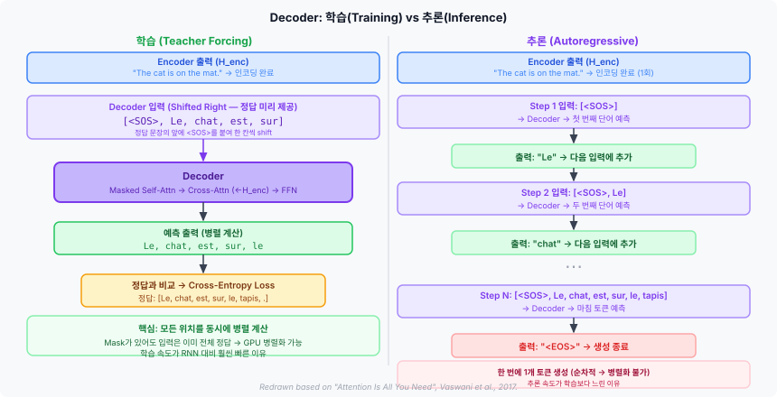
| 항목 | 학습 (Training) | 추론 (Inference) |
|---|---|---|
| 정답 정보 | 알고 있음 (병렬 입력) | 모름 (순차 생성) |
| Decoder 입력 | Shifted target 전체 한 번에 | <SOS>부터 시작, 생성된 token 누적 |
| Look-Ahead Mask | 적용 (미래 차단) | 불필요 (미래 없음, 순차 처리) |
| 연산 방식 | 병렬 (전체 위치 동시) | 순차 (한 token씩) |
| 목표 | Loss 최소화 (정답 확률 최대화) | 확률 높은 token 선택 |
| 속도 | 빠름 (GPU 병렬화) | 상대적으로 느림 (순차) |
Step 1: [<SOS>] → Decoder → "Le" 예측
Step 2: [<SOS>, Le] → Decoder → "chat" 예측
Step 3: [<SOS>, Le, chat] → Decoder → "est" 예측
... <EOS> 예측까지 반복
전체 요약
- Tokenizer는 문장을 token id로 바꾼다.
- Embedding은 token id를 d_model 차원 벡터로 바꾼다.
- Positional Encoding은 위치 정보를 더한다.
- Encoder는 source 문장을 문맥이 반영된 표현(H_enc)으로 바꾼다.
- Attention은 token들이 서로를 얼마나 참고할지 계산한다.
- FFN은 각 token 표현을 독립적으로 가공한다.
- Decoder는 이전 target token과 H_enc를 참고해 다음 token을 예측한다.
- Mask는 미래 token이나 <PAD> token을 참고하지 못하게 막는다.
- Linear + Softmax는 다음 token 확률 분포를 만든다.
Transformer는 token 간 관계를 Attention으로 계산하고, FFN으로 각 token 표현을 가공하면서, 입력 문장을 출력 문장으로 변환하는 Encoder-Decoder 구조입니다.
이 세미나 자료의 모든 도식과 수식은 위 논문을 기반으로 재작성되었습니다.